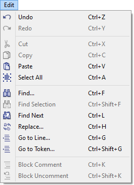

编辑
菜单
当
编辑器
窗格处于活动状态时，主菜单上的
编辑
菜单如下所示。各命令会根据当前上下文（即是否选中了文本、撤销/重做栈中是否存有命令等）相应地启用/禁用。

撤销
- 撤销上一次操作。
重做
- 再次执行最近一次被“撤销”的操作。
剪切
- 删除所选文本并将其放到剪贴板。
复制
- 将所选文本复制到剪贴板。
粘贴
- 将剪贴板上的文本插入到当前光标位置。
删除
- 删除所选文本。
全选
- 选择窗格中的所有文本。
查找…
- 打开
查找
对话框。
查找所选内容
- 查找当前所选文本的下一个实例。
查找下一个
- 查找在
查找
对话框中输入的文本的下一个实例。
替换…
- 打开
替换
对话框。
转到行…
- 打开
转到行
对话框；输入编号以转到该行。
转到标记…
- 打开
转到标记
对话框；输入编号以转到当前行中该位置处的标记。
块注释
- 注释所选文本（如果选择了多行，则逐行注释）。
块取消注释
- 取消注释所选文本（如果选择了多行，则逐行取消注释）。
⇄
FLAC3D 7.0 文档
»
程序指南
»
Program Mechanics
»
Program Layout, Configuration, Tools
»
The Program Window
»
Menus
»
⇐
File
Menu
|
Layout
Menu
⇒
这些内容对您有帮助吗？…
FLAC3D
©
2019,
Itasca
原文更新于 2020 年 10 月 8 日